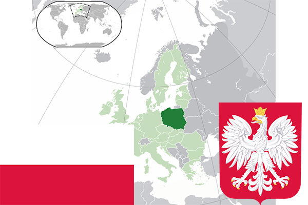

To`liq nomi: Polsha Respublikasi
Region: Yevropa
Qonunchilik shakli: Respublika
Mustaqillik kuni: 11-noyabr 1918-yil
Poytaxt: Varshava
Maydoni: 312,679 km²
Chegaradosh davlatlari: Rossiya, Litva, Belorusiya, Chexiya, Ukraina, Slovakiya, Germaniya.
Aholisi: 38 627 070 (2016-yil)
Aholi zichligi: 123,5 /км²
Aholining o`rtacha yoshi: 77,51 yil
Rasmiy tili: Polyak tili
Dini: Xristian
Pul birligi: Polsha zloty
Telefon prefiksi: +48
Internet domen: .pl
Xalqaro tashkilotlarga a`zoligi: BMT, NATO
Dengiz va okeanlarga chiqishi: Boltiq dengizi
YIM: Butun: $510 mlrd(2017-yil) Jon boshiga: $15,050
Yirik shaharlari: Varshava, Krakov, Lodz, Poznan